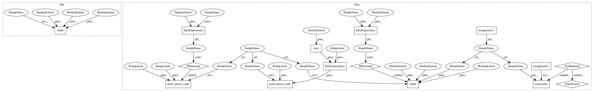

0e570423a0ecde90bff329a70efa3b666b6b316e,dev/benchmarks/openmp/CUBA_standalone.py,,,#,10
Before Change
net.run(10 * second, report="text")
if standalone == 1:
device.build(project_dir="data_cuba_%d" %n_threads, compile_project=True, run_project=True, debug=False)
After Change
standalone = int(sys.argv[-2])
n_threads = int(sys.argv[-1])
path = "data_cuba_%d" %n_threads
if standalone == 1:
set_device("cpp_standalone")
brian_prefs.codegen.cpp_standalone.openmp_threads = n_threads
start = time.time()
n_cells = 20000
n_exc = int(0.8*n_cells)
p_conn = 0.1
taum = 20 * ms
taue = 5 * ms
taui = 10 * ms
Vt = -50 * mV
Vr = -60 * mV
El = -49 * mV
eqs = Equations("""
dv/dt = (ge+gi-(v-El))/taum : volt
dge/dt = -ge/taue : volt
dgi/dt = -gi/taui : volt
""")
P = NeuronGroup(n_cells, model=eqs, threshold="v>Vt", reset="v=Vr", refractory=5 * ms)
P.v = Vr + rand(len(P)) * (Vt - Vr)
P.ge = 0 * mV
P.gi = 0 * mV
Pe = P[0:n_exc]
Pi = P[n_exc:]
we = (60 * 0.27 / 10) // excitatory synaptic weight (voltage)
wi = (-20 * 4.5 / 10) // inhibitory synaptic weight
Se = Synapses(Pe, P, model = "w : 1", pre = "ge += w*mV")
Se.connect("i != j", p=p_conn)
Se.w = "%g" %(we)
Se.delay ="rand()*ms"
Si = Synapses(Pi, P, model = "w : 1", pre = "gi += w*mV")
Si.connect("i != j", p=p_conn)
Si.w = "%g" %(wi)
Si.delay ="rand()*ms"
spike_mon = SpikeMonitor(P)
net = Network(P, Se, Si, spike_mon, name="stdp_net")
if standalone == 1:
device.insert_device_code("main", "std::clock_t start = std::clock();")
net.run(10 * second, report="text")
if standalone == 1:
device.insert_device_code("main", """
std::ofstream myfile ("speed.txt");
if (myfile.is_open())
{
double value = (double) (std::clock() - start)/(%d * CLOCKS_PER_SEC);
myfile << value << std::endl;
myfile.close();
}
""" %(max(1, n_threads)))
try:
os.removedirs(path)
except Exception:
pass
if standalone == 1:
device.build(project_dir=path, compile_project=True, run_project=True, debug=False)
In pattern: SUPERPATTERN
Frequency: 3
Non-data size: 15
Instances
Project Name: brian-team/brian2
Commit Name: 0e570423a0ecde90bff329a70efa3b666b6b316e
Time: 2014-08-26
Author: pierre@yger.net
File Name: dev/benchmarks/openmp/CUBA_standalone.py
Class Name:
Method Name:
Project Name: brian-team/brian2
Commit Name: 0e570423a0ecde90bff329a70efa3b666b6b316e
Time: 2014-08-26
Author: pierre@yger.net
File Name: dev/benchmarks/openmp/CUBA_standalone.py
Class Name:
Method Name:
Project Name: brian-team/brian2
Commit Name: 0e570423a0ecde90bff329a70efa3b666b6b316e
Time: 2014-08-26
Author: pierre@yger.net
File Name: dev/benchmarks/openmp/STDP_standalone.py
Class Name:
Method Name:
Project Name: brian-team/brian2
Commit Name: 0e570423a0ecde90bff329a70efa3b666b6b316e
Time: 2014-08-26
Author: pierre@yger.net
File Name: dev/benchmarks/openmp/example_standalone_bis.py
Class Name:
Method Name: